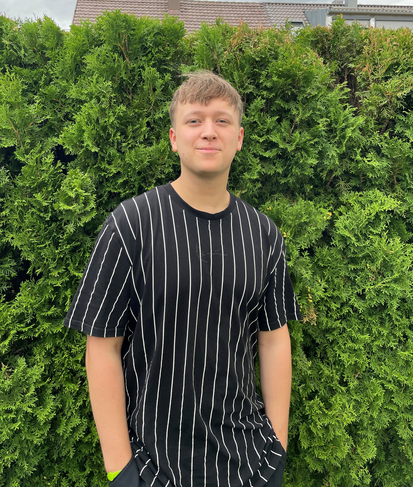

Ich verbinde Design, Entwicklung und Management — für kreative Ideen, klare Lösungen und effiziente Wege.

Elia Baisch, geb. 2002. Ich arbeite an der Schnittstelle von Design, Entwicklung und Management und verbinde dabei unterschiedliche Perspektiven miteinander. Mein bisheriger Weg hat mir Grundlagen in verschiedenen Bereichen gegeben und vor allem gezeigt, wie wertvoll es ist, nicht nur eine Disziplin zu betrachten, sondern Zusammenhänge zu verstehen.
Ich interessiere mich für kreative Lösungen, effiziente Arbeitsweisen und die Frage, wie aus einer Idee etwas entsteht, das am Ende tatsächlich funktioniert und einen Mehrwert bietet. Dabei bewege ich mich gerne zwischen Gestaltung und Technik, probiere neue Ansätze aus und finde mich schnell in unbekannten Themen zurecht. Mit meinem aktuellen Fokus auf Management erweitere ich dieses Fundament um eine strategische und organisatorische Perspektive. Mein Ziel ist es, die verschiedenen Bereiche nicht getrennt voneinander zu betrachten, sondern miteinander zu verbinden und daraus bessere Lösungen zu entwickeln. Dabei bleibt für mich vor allem eines wichtig: neugierig zu bleiben, neue Möglichkeiten auszuprobieren und das eigene Wissen kontinuierlich weiterzuentwickeln.
Lebenslauf (PDF)Technische Analyse, Datenauswertung & Automatisierung von Abläufen.
Beratung, Lager- & Warenmanagement, Kassenabrechnung.
Testautomatisierung & RPA.
Werkstudent- & Ferienjobs im Logistikbereich.
Verfahren aus meinen Bildverarbeitungs-Projekten, direkt zum Ausprobieren — komplett im Browser, kein Upload, kein Server. Über das Info-Symbol im Tool steht jeweils, wie das Verfahren funktioniert.
Zwei Bilder in einem: aus der Nähe das eine, aus der Ferne das andere. Tief- und Hochpass nach Oliva & Torralba.
Öffnen →Zwei Bilder nahtlos verschmelzen — Multi-Band-Blending über Laplace-Pyramiden, ganz ohne sichtbare Naht.
Öffnen →Farbstiche automatisch herausrechnen — Gray World und White Patch, im linearen Lichtraum.
Öffnen →Bilder in ein Kachelraster zerlegen — sieben Methoden von Mittelwert bis K-Means und Bilateralfilter.
Öffnen →Zwei Bilder über Sobel, Scharr und Laplace vergleichen — Spurensuche nach Artefakten generierter Bilder.
Öffnen →Bilder zwischen PNG, JPG, WebP und AVIF umwandeln und skalieren — mit Größenvergleich.
Öffnen →URL oder Text als gestaltetes Poster — sechs Themes, Titel, Untertitel, Badge. Als PNG downloadbar.
Öffnen →